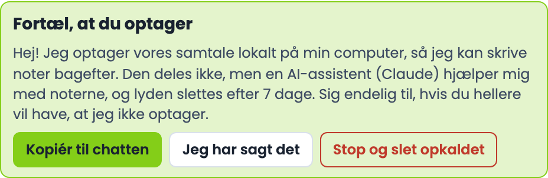

Sales Coach
A live coach for your sales calls, on your own Mac. No bot joins the call.
You're on a phone. Open this page on your Mac to install it.

What it fixes
The everyday problems of a day full of calls. These three work from the first call, with nothing to set up and no AI.
Your meetings run over time
The meeting's own countdown, from the calendar, in the window and in the menu bar. Orange in the last minutes, red when you're over, with a nudge to wrap up and book the next step.
Works without AIYou forget the next meeting
From 15 minutes before, the countdown to your next meeting sits in the menu bar, also while you're still in the last one. Two minutes before, the meeting link opens by itself.
Works without AIYou talk too much
Your share of the talking, live, against a target for the kind of call. A first meeting wants you listening, a walkthrough lets you present. When you've talked for more than a minute in one go on a first meeting (longer on a walkthrough), it tells you to stop and ask.
Works without AIYou forget what to ask
With Claude on, the window also knows what this call is for. It only speaks up when it matters.
1
2
3
4
- 1
The clock and the kind of call
Time against the meeting's length, and a countdown in the menu bar near the end and before your next meeting. The kind of call (a first meeting, a walkthrough, a close) comes from the invite, and you can change it.
- 2
Your share of the talking
Live, against a target for that kind of call. A first meeting wants you listening (30-45%), a walkthrough lets you present. The green band is the target.
- 3
One cue at a time
A follow-up on what they just said, a number to dig into, time running out. Never a script. Here:
Hvad koster de ti timer om måneden jer i kroner?
after the other side said bookkeeping takes ten hours a month. - 4
A checklist for this call
Made from the invite and your last call with the same people, ticked off as they answer, with what is still missing. The full transcript of both sides runs further down, about 1.5 seconds behind speech.
You don't know how the call went
The coach's result about ten seconds after you hang up, notes about a minute later, and over the weeks whether you get better.
 1
2
3
4
1
2
3
4
- 1
How the call went, in numbers
Your talk share against the target, your longest monologue, how much of the checklist you got through.
- 2
One honest sentence
What went well and what is still missing. Here:
Godt mål og aftalt møde, men månedsbeløbet i kroner og systemet mangler stadig.
- 3
The next meeting, ready to book
When you agreed on a next meeting in the call, it is drafted with the time and the people. One click opens it in your calendar. Nothing is ever sent by itself.
- 4
Next steps and what to ask next time
Plus one thing to practise. Over the weeks, the "Bliv bedre" page shows whether you end on time, keep your talk share on target and avoid long monologues.
Your calls stay on your Mac
Recording and speech-to-text run on the Mac. With the AI on, only the text goes to Claude, on your own Claude account. Nothing goes to us.
Recording people, done right
GDPR asks you to tell people you record, to keep it no longer than you need, and to delete it when they ask. The coach does the remembering for you.

- 1
Tell them, on every call
When a call starts, the window asks you to tell them. One click copies a short message to paste in the meeting's chat with ⌘ V (Meet, Zoom, Teams, Slack), or tick that you said it out loud. How and when you told them is saved with the call.
- 2
If they say no
"Stop og slet" stops the recording at once and deletes everything from that call: audio, transcript, notes and the result. It doesn't start again until the call is over.
- 3
Kept no longer than needed
You choose: the audio goes right after the call, or after 7 or 30 days (7 is the default). Transcripts and notes after 30 days, 90 days, a year, or when you delete them.
- 4
Deleted when they ask
Every saved call has a "Slet opkaldet" button: the recording, the notes and your feedback on it are gone.
This helps you follow the rules; it isn't legal advice. You are the one recording, so you decide why and for how long. With the AI on, the text of the call goes to Anthropic (the company behind Claude): the standard message says so, and check that your Claude plan's terms fit business use.
Advanced: plug in your own systems
Where it gets really good: connected to your mail, text messages and customer list, the coach knows who you're talking to before the call, and keeps your systems up to date after it. This is how we run it at RM Marketing.
This part takes an add-on: a small file that connects your own systems. We're making it easier to set up; until then, it's for the technically curious. Tell us what you use.
Install it
About ten minutes the first time, mostly the speech model (about 6 GB, downloaded once). No admin password.
Open Terminal
Press ⌘ Space, type Terminal and press Return.
Paste this line and press Return
curl -fsSL https://rmmarketingmcc.github.io/sales-coach/install.sh | bash
Downloading Sales Coach... Version 0.2.0 Setting up the coach... Downloading the speech model... Speech model ready.
Answer four questions
Your name, your company, what you sell in one line, and the language of your calls (Danish or English). The coach uses them to tell you apart from the other side and to know what a good call looks like for you.
If you have Claude Code, it is found by itself. Otherwise you can paste an Anthropic API key, or skip it: the talk meter, transcript and clock work without.
Your name: Anna Holm Your company: Holm Rådgivning What you sell, in one line: Bookkeeping for small firms The language of your calls [da]: da Claude Code found.
Allow three things
macOS asks once for each. Click Allow. Two short sounds play to test that the recording works; the test is not kept.
Join a call
From now on it runs by itself: when a call starts in Meet, Zoom, Teams or any other call app, the coach opens next to it. "Coach" in the menu bar shows your talk share and has the switches.
What you need
On the Mac
- A Mac with Apple Silicon (M1 or newer)
- macOS 14.4 or newer
- About 9 GB free the first time
For the checklist, cues and notes
- Claude Code, signed in on your Claude subscription
- or an Anthropic API key (you pay Anthropic for what you use)
- Without either: talk meter, transcript and clock
Questions
Does the other side see it?
Can I record people without telling them?
Can it write in the meeting chat by itself?
Which languages?
Where are my recordings?
CallRecordings in your home folder. After each call the audio is compressed, and deleted after 7 days unless you choose otherwise. Transcripts and notes stay a year by default. Both are switches under "Coach" in the menu bar.A phone call, not a video call?
How do I update it?
How do I remove it?
curl -fsSL https://rmmarketingmcc.github.io/sales-coach/install.sh | bash -s -- --uninstall. Your recordings stay in CallRecordings until you delete the folder.Something doesn't work
What's new
See the releases on GitHub.